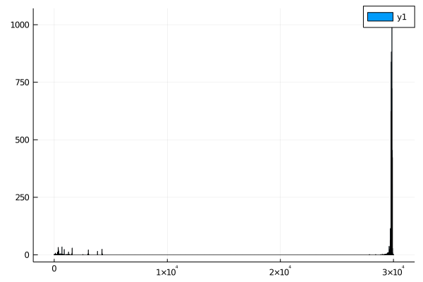
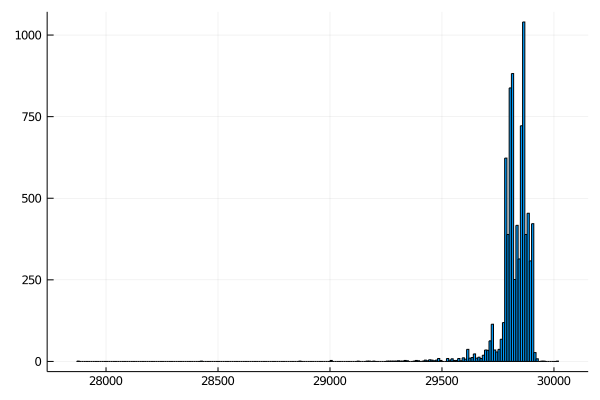

Assignment 09
Let's continue with our analysis of SARS-CoV2 genomes. But before we do - I want to add one more trick to your workflow. In the following code examples the package repo from assignment 8 is called BioinformaticsBISC195.jl, and the analysis repo is called CoVAnalsyis.
Using Revise.jl during development
Typically, when you load a package in julia, that package becomes frozen in amber. That is, if you edit the source code after using the package, it is not easy to get these changes to show up in your julia session without restarting julia.
For example, start a julia REPL (not in VS Code[1]), change directories to your analysis repo, activate the environment, then load your bioinformatics package.
julia> cd("repos/CoVAnalysis")
@v1.4> activate .
julia> using BioinformaticsBISC195You should now have access to any functions exported from your package.
julia> complement('A')
'T': ASCII/Unicode U+0054 (category Lu: Letter, uppercase)BUT changing anything in your package repo is now blocked. For example, add and export a new function, or change an existing function to do something different (I changed my complement function to always return 42).
Even if you repeat using BioinformaticsBISC195, these changes will not be incorporated into your julia session.
Having to restart your julia session each time you change something would make package development a nightmare, but thankfully there's a better way.
The Revise.jl package comes to the resuce. It's a bit magical - to be honest, I don't understand how it works, but if you load it (using Revise) before loading your package, then new changes you enter will be incorporated into your running julia session. This package is so widely used that the julia VS code extension loads it by default (which is why I said not to open a REPL in VS Code).
Try it out - restart julia, then repeat the above process, but do using Revise right before using BioinformaticsBISC195.
Note: don't forget to revert the changes you made to your package code.
With this in mind, you're ready to continue working on coronavirus analysis. As you go forward, put reusable code (eg new functions and types) into your package repository, while analysis-specific code (eg loading files, calculating stats, plots) should go into your analysis repo.
Don't forget to describe the analyses you're performing in your markdown notebooks.
Continuing CoV analysis
In the previous lesson, we calculated the mean and standard deviation of sequence lengths. But mean and standard deviation are really only descriptive if the lengths of the sequences follow a normal distribution.
The minimum() and maximum() functions take vectors as arguments, and return the smallest and largest values respectively.
Use the minimum() and maximum() functions to find the length of the shortest and longest coronavirus genome in your dataset. Do the values make sense, given the mean length?
Identifying outliers
In the dataset I downloaded, there are several genomes that are very small - less than 1000 bases when the mean length is closer to 30k bases.
How did I figure this out? I promise I didn't look at the genome file by hand!
One of the easiest ways to get an overview of a dataset is to make some exploratory plots. For this, we can use the Plots.jl package, which makes it very easy to make plots with your data in julia.
# having previously created a vector with the lengths of my sequences...
using Plots
histogram(seq_lengths)
- Use the
Plotspackage to create a histogram of your coronavirus genome lengths. - Look at the documentation for the
Plots.jlpackage and see if you can figure out how to remove the legend and add more descriptive axis labels to this plot
I'd expect most coronaviruses to have similar length genomes, so anything less than 25k bases is probably a mistake. Take note! Datasets like this are never perfect - it's always worth your time to make sure there aren't errors.
Filter your sequences to remove any that have a length of less than 25k bases. There are a couple of different ways to do this - but keep in mind that, if the headers and sequences from your fasta file are separate, you need to make sure that you remove the headers that correspond to short sequences as well.
Some possibilities:
- Add a filter to your
parse_fasta()function. This is not ideal, since it makes the function less generalizable to other problems. - Find the index of all the sequences that are less than 25K bases long, then remove the items at those indices from the sequence vector and the headers vector. Take a look at the
findall()function if you plan to take this path. Warning: if you remove things one by one, you may change the indices of other things in the vector. - Loop through the sequences, and, if they are long enough, push them into a new vector. Again - be sure to take care of the headers as well.
- Find the index of all of the sequences that are longer than 25k bases, and then take a slice of the original vector. Again,
findall()may be useful here.
Whatever you do, you should ensure that:
- The
minimum()of the sequence length is actually > 25k bases. - If your sequence and header vectors are separate, they should have the same length.
You can use @assert to make sure that your code did what you expect. @assert followed by a boolean expression will throw an error if the expression is false.
julia> @assert 1 == 1
julia> @assert 1 == 2
ERROR: AssertionError: 1 == 2
Stacktrace:
[1] top-level scope at REPL[13]:1So you might do @assert length(header_vector) == length(sequence_vector) for example.
Plot the result
Create a new histogram that shows the distribution of filtered sequences. It should look something like this:

Kmer analysis of coronavirus genomes
The best way to reason about how closely related two sequences are is to use some "distance metric". Sequences that are closer together are inferred to share a common ancestor more recently than sequences that are further apart.
The most widely-used distance metrics typically come from doing an alignment, but the algorithms for aligning sequences are a bit beyond the scope of this course.
Instead, we can do a quick-and-dirty analysis by comparing the unique kmers in a sequence. Look back to Assignment04, where you created a function to count the kmers in a sequence.
Unique kmers
Here, we don't need to count the kmers, we just want to know which kmers of a given length are present. You might find it useful to use the Set type, which is an unordered collection of unique elements:
julia> my_set = Set([1,1,1,1,1,1,2,2,2,2,2])
Set{Int64} with 2 elements:
2
1
julia> push!(my_set, 3)
Set{Int64} with 3 elements:
2
3
1
julia> push!(my_set, 3) # since 3 is already in it, nothing changes
Set{Int64} with 3 elements:
2
3
1
julia> union!(my_set, [3,3,3,3,3,4,4,4,4,4,4])
Set{Int64} with 4 elements:
4
2
3
1Add a function to your bioinformatics package that takes 2 arguments - a sequence and an integer (k), and returns all of the unique kmers of length k
Do not keep kmers with ambiguous bases (anything other than A, T, G, or C).
This function may take a long time to run on all of your genomes. Use a small subset of genomes and/or the ex1.fasta file while you're working on it to make sure it works before trying to run it with all of your genomes.
Comparing unique kmers
We can now use set theory to compare genomes to one another.
The "union" of two or more sets is the set containing all of the elements found in any set.
julia> s1 = Set([1,2,3]); s2 = Set([2,3,4]);
julia> union(s1, s2)
Set{Int64} with 4 elements:
4
2
3
1The "intersection" of two or more sets is the set of elements that occur in all of the sets.
julia> intersect(s1, s2)
Set{Int64} with 2 elements:
2
3While the "difference" refers the the elements of the first set but not in any of the other sets.
julia> setdiff(s1, s2)
Set{Int64} with 1 element:
1
julia> setdiff(s2, s1)
Set{Int64} with 1 element:
4A distance metric should have the following features:
- Should be a positive number between 0 and 1
- Identical things should have a distance of 0
- Things with absolutely no similarity should have a distance of 1
To do this with our kmer sets, we can define a distance metric that is 1 - (length of intersection / length of union).
Or alternatively, ((length of set1 - set2) + (length of set2 - set1)) / length of union.
Add a function to your bioinformatics package that takes two kmer sets and calculates the distance between them.
In the next lesson, we'll use the distances between sequences to learn something about the evolution of SARS-related coronaviruses.
Completion Checklist
- [ ] Further description of sequence lengths
- [ ] get the smallest and largest sequence length
- [ ] use
histogram()fromPlotson sequence lengths
- [ ] Filter sequences to remove anything < 25k basepairs long
- [ ] Create histogram of filtered sequence lengths
- [ ] Unique kmer function that discards kmers with ambiguous bases
- [ ] Kmer set distance function that returns a distance metric
[1]: The Julia language extension of VS Code loads Revise.jl automatically if you have it installed